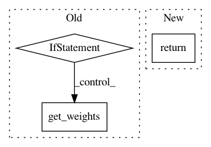

ee179f7da155c3cb8129b954db828906886ad4e4,keras/layers/core.py,AutoEncoder,get_output,#AutoEncoder#Any#,402
Before Change
dest = src.T
def get_output(self, train):
if not train and not self.output_reconstruction:
return self._get_hidden(train)
if self.tie_weights:
for e,d in zip(self.encoders, self.decoders):
map(self._tranpose_weights, e.get_weights(), d.get_weights())
return self.decoders[-1].get_output(train)
After Change
if len(dec_param.shape) > 1:
enc_param = dec_param.T
return decoded
def get_config(self):
return {"name":self.__class__.__name__,
"encoder_config":self.encoder.get_config(),
In pattern: SUPERPATTERN
Frequency: 3
Non-data size: 3
Instances
Project Name: keras-team/keras
Commit Name: ee179f7da155c3cb8129b954db828906886ad4e4
Time: 2015-06-08
Author: francois.chollet@gmail.com
File Name: keras/layers/core.py
Class Name: AutoEncoder
Method Name: get_output
Project Name: keras-team/keras
Commit Name: 94c930e99e8908d2188213672bed050b54ebdb5a
Time: 2015-07-14
Author: francois.chollet@gmail.com
File Name: keras/layers/core.py
Class Name: AutoEncoder
Method Name: get_output
Project Name: keras-team/autokeras
Commit Name: 534a56bb2f790e17160586ed8a72b88d37de9c5a
Time: 2018-05-21
Author: jin@tamu.edu
File Name: autokeras/layer_transformer.py
Class Name:
Method Name: deeper_conv_block